Memory Safety¶
Memory handling and impact of memory corruption¶
Memory corruption is as old as operating systems and networks and exploitation/facilities really depends on the programming language in use. [1].
As small reminder, one byte is the concatenation of 8 bits and allow to encode 255 values in the decimal system. For the hexadecimal system, digits are between 0 and 15(F) and are the concatenation of 4 bits so two digits make one byte.
Processor and memory¶
Processor fetches instruction whose address is stored in EIP (
 register containing the next instruction to be executed)
register containing the next instruction to be executed)Processor decodes the instruction
- Processor executes the instruction
Instructions are the building blocks of assembly programs. In x86 assembly (32 bits systems), it is made of a
mnemonic/instruction 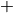 zero or more operands
Operands are typically registers, memory addresses, or data (immediate)
Example :
MOV ECX, 0x42MOV ECXcorresponds to0XB9(instruction)0x42corresponds to0x42000000(operands)- The machine views
B9 42 00 00 00
Two types of processors:
| CISC (Complex Instruction Set) (e.g intel 8086) | RISC (Reduced Instruction) (e.g sparc) |
|---|---|
| Lots of instructions and different clock cycles | Small number of instructions, and more predictable clock cycles |
| Lots of transfers with memory | Few transfers with memory, lots of registers |
Memory principles¶
Memory is viewed as a large table where addresses are coded on bytes, a word is a sequence of bytes (between 32 and 64 bits) and also define the size of addresses and registers (for 32 bits, it’s 4 bytes, i.e 8 hexadecimal digits).
- Number of addresses excluding the “start” and “end” address: 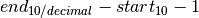
- Number of addresses including the “start and “end” address: 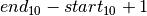
Note that memory gestion unit virtualizes the memory space which means that each software program thus has the impression to access the entire memory space even if not.

Registers organisation¶
General registers (32 bits) for data :
EAX: usually reserved to store the output of function callEBXECXEDX
CS ,
SS, DS, ES, FS, GS.EIPcontains address of the next instruction to be executedEBPis the base stack register, used to know where we are in the stackESPis the top stack pointer (hence lowest address in the stack)ESIandEDIare used to offset position of some data for specific operations
And finally, special registers for the processor.
| [1] | https://ieeexplore.ieee.org/document/6547101/?arnumber=6547101 |
Vulnerabilities stack and heap¶
char *buffer; //The address of memory allocated for buffer is stored in the stack
buffer = malloc(sizeof(char)*10); //The allocated memory is “somewhere” in the heap.
Main stack exploit/vulnerability :
Buffer overflow (Stack): Buffer overflow is when you’re allowed to smash the stack, that is to write in the stack where you should not. (Can also happen on heap, but with different consequences). Often requires the ability to execute the stack.
- Potential exploits are: shellcode, backdoor, variable value modification, or denial of service
#include <stdio.h> void main() { int buffer[10]; printf("here is the value d",buffer[1000]); //Segmentation fault = Access data which is potentially outside of stack of the process, or not allowed //No SF certainly means that we touch something still in the stack }
Format string (Stack): Format string is simply abusing functions like
printfto read/write memory#include <string.h> #include <stdio.h> void main(){ //If no argument matches %d , then one reads what it at the place where the argument should be //It create a hole in memory that may be written //With %n , can also be used to write on the printf("hello, %d %d %d %d"); }
Heap memory management¶
Heap works by allocating chunks of bytes allocated as free memory
(malloc). The heap is thus a double linked list of chunks with:
- A pointer to the first element (head of heap), i.e., to the first free memory space
- A pointer to previous chunk, one to next chunk
- Data from the user.
{kind=link}
When one frees some memory (free), chunks are stored in list to be
“quickly”. Those list are fastbin (very few bytes), small bin, unsorted
bin and they depend on the size of the chunk and playing with them may
lead to vulnerabilities. When allocating memory, always replace the
first most similar chunk in size.
Main heap exploit/vulnerability :
Used after free vulnerability: Potential exploit consist to program allocates and then later frees memory block A. Attacker allocates a memory block B, reusing the memory previously allocated to block A. Attacker writes data into block B. Program uses freed block A, accessing the data the attacker left there
Code
reuse exploit- This is a memory safety issue: the semantics of the language does not match the one on the system where it is executed.
//example 1 typedef struct{ void (*vulnfunc )(); } exploitable; void legitimate(){ printf ("I am the legitimate \n"); } void bad() { printf ("I am the bad function \n"); } void main(){ exploitable *malloc1 = malloc(sizeof(exploitable)); malloc1->vulnfunc = legitimate; malloc1->vulnfunc(); //I am the legitimate function free(malloc1); //Prevention: malloc1 = NULL; //long *malloc3 = malloc(0); //with that we got a segfault at L1 => malloc3 has now taken the place of malloc2 //in the chunk of the stack.Consequently, malloc3 points to a new chunk that must be assigned long *malloc2 = malloc(0); //Will access the preceding free memory without erasing it. *malloc2 = (long)bad; malloc1->vulnfunc(); //L1 : I am the bad function //Should throw memory error //Explanation : malloc2 took the space of malloc1 }
//example 2 int main(int argc, char ** argv) { char *admin = NULL; char *name = NULL; admin = malloc(32); admin[0] = 0; if (admin == NULL || admin[0] == 0) //(1) we have admin[0] = 0 printf("not allowed!\n"); free(admin); //(2) we free admin, but not set it to Null name= malloc(32); //(3) ) name takes the place of admin strncpy(name, "pixis", 5); //(4) name[0] is set to “p” and so is admin[0] if (admin == NULL || admin[0] == 0) { //(5) admin[0] is thus no longer equal to 0 printf("not allowed!\n"); return -1; } printf("Allowed: you're in secret zone! !\n"); free(name); name = NULL; return 0; /* should give: not allowed! not allowed! However, it gives: not allowed! Allowed: you’re in secret zone! Admin has been freed, but not set to NULL */ }
Complementary: Use tools such as
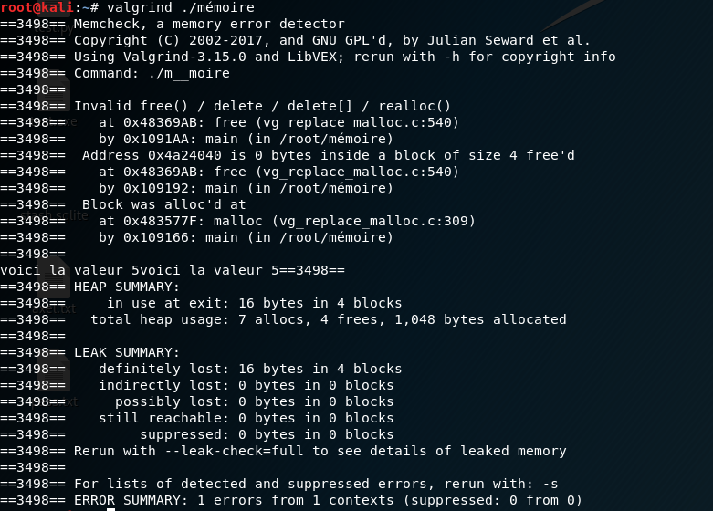VALGRIND.Double free vulnerability: the exploit is here to read write part of the memory you should not touch. Here the justification with the state of the
freelist/fastbinaccording to free and malloc:- 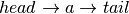
- 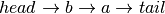
- 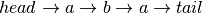
- [’a’ is returned]
- [’b’ is returned]
- 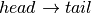 [’a’ is returned]
void main() { int *a,*b,*c,*d,*e,*f; a = malloc(sizeof(int)); b = malloc(sizeof(int)); c = malloc(sizeof(int)); free(a); //Justification from here free(b); free(a); //double free d = malloc(sizeof(int)); e = malloc(sizeof(int)); f = malloc(sizeof(int)); *d = 5; printf("voici la valeur %d",*d);//5 *f = 6; printf("voici la valeur %d",*d);//6 }
Null pointer abuse: This example takes an IP address from a user, verifies that it is well formed and then looks up the hostname and copies it into a buffer. [5]
If an attacker provides an address that appears to be well formed, but the address does not resolve to a hostname, then the call to
gethostbyaddr()will return NULL. Since the code does not check the return value fromgethostbyaddr(), a NULL pointer dereference would then occur in the call tostrcpy().void host_lookup(char *user_supplied_addr) { struct hostent *hp; in_addr_t *addr; char hostname[64]; in_addr_t inet_addr(const char *cp); /*routine that ensures user_supplied_addr is in the right format for conversion */ validate_addr_form(user_supplied_addr); addr = inet_addr(user_supplied_addr); hp = gethostbyaddr(addr, sizeof(struct in_addr), AF_INET); strcpy(hostname,hp->h_name); }
- Control flow Hijacking: Redirect the flow to an already existing executable code in memory.Example: buffer overflow and executable shell code in the stack
Return Oriented Programming: 64 bit X86 processors the first argument to a function to be passed in a register. ROPlooks for functions that pop values from the stack into registers.
- Non control data attacks: Corrupt the data. [6]Example: corrupt the parameters of a sensitive function (disable security check)
{kind=link}
| [2] | “Control Flow Bending: On the effectiveness of control flow integrity” |
| [3] | “Softbound : Highly Compatible and Complete Spacial Memory Safety for C” |
| [4] | https://nebelwet.net/teaching/16-527-SoftSec/slides/02-memory_safety.pdf |
| [5] | https://cwe.mitre.org/data/definitions/476.html |
| [6] | https://github.com/JonathanSalwan/ROPgadget |
Memory Safety¶
- The SoK paper proposes : “A program execution is memory safe so long as memory access error does not occur”.This is not a definition, but rather a consequence of a potential definition (what is an error?)
- Prof Mathias Payers proposes a definition based on the concept of “runtime”: “Memory safety is a property that ensures that all memory accesses adhere to the semantics defined by the source programming language.” A contract is thus passed between user and
compiler.Payer: “The gap between the operational semantics of the programming language and the underlying instructions provided by the hardware allow an attacker to step out of the restrictions imposed by the programming language and access memory out of context.”
Example :
char *a;
a = malloc(10*sizeof(char));
a[20] ='c';
By definition of the semantics of C language, pointer deference have to stay within bounds of their pointer’s valid objects. However, if the outside bound memory location is available, the machine on which the program is executed may accept it.
- Conclusion: memory safety is a general property that should be defined at runtime. A program is memory safe if all of its executions are safe
Conditions to break memory safety¶
Memory access errors can be split into two classes:
- Those where a pointer become “dangling”Temporal memory safety
- All memory dereferences are valid at the time of the dereference
- the pointed to object is the same as when the pointer was created.
- Example: used after free, double free, etc
- Those where a pointer goes out of boundSpacial memory safety
- all memory dereferences are within bounds of their pointer’s valid objects.
- An object’s bounds are defined when the object is allocated.
- Any computed pointer to that object inherits the bounds of the object. Any pointer arithmetic can only result in a pointer inside the same object.
- Example :
char *a; a = malloc(10*sizeof(char)); a[20] ='c';
Prevention/detection¶
Protections¶
- (static) Detection consists in deploying a series of techniques
to check whether software suffers from a memory access error
- Techniques for detection includes (but are not limited to): fuzzing, static code analysis, formal verification, model based testing, control flow integrity…
- Runtime solution consists in deploying techniques to prevent
memory access errors during execution (in which case the software is
stopped)
- Runtime solutions include fat pointers and global objects.
Static Detection¶
Detection solutions typically done at conception time.
They execute the code:
- Testing (which test specification)Compares input/output wrt a model/some requirements and requires manual writing of all the test code/cases. Good for testing what the test writer knows/spec but rarely catches anything unexpected (problematic for security). Good coverage requires extensive test writing (E.g. to test all of a
 bit input requires
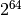 tests). Not effective for (non trivial) memory
problems, difficult for concurrent systems (quantitative systems
are even worse)
bit input requires
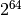 tests). Not effective for (non trivial) memory
problems, difficult for concurrent systems (quantitative systems
are even worse) - Fuzzing inputs (modify structure, outside specifications)Good for adding “noise” to functions/values (push it where things are not specified). Good fuzzers can find interesting errors (exhausts unspecified inputs
 great for
security). As before, good coverage requires extensive running of
the fuzzer. Difficult to fuzz input without clear strategy
(symbolic execution or deep learning) but purely random in many
cases.
great for
security). As before, good coverage requires extensive running of
the fuzzer. Difficult to fuzz input without clear strategy
(symbolic execution or deep learning) but purely random in many
cases.- Well known tool:
American fuzzer loop,radamsa,zzuff,webfuzz(for the web).
- Well known tool:
They work on a math model:
- VerificationTries to verify system represented by a math model. Usually a combination of manual and automated efforts (fully not yet feasible). It allow to prove that bugs do not exist, since lack of proof implies bug is possible. Longly considered as impractical since too big and unclear semantics/specification but recent progress can make it useful for ecology/energy saving.
Model checking (not really used)
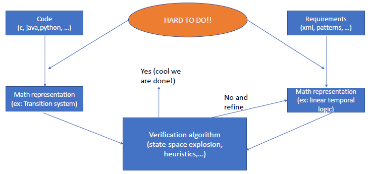Example of model checker:
- SPIN (http://spinroot.com/spin/whatispin.html)
- UPPAAL (https://uppaal.org/)
- Able to handle case of large size (Metro, Nasa Rover, …)
- Don’t forget the math model (for system and specifications)!
- The checker can handle things that can be represented within the model
Examples of a “math model”:
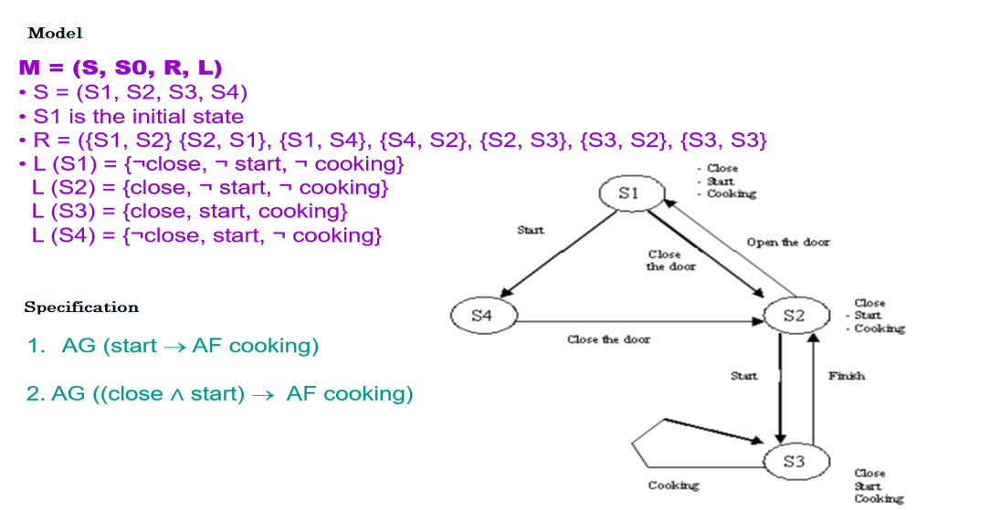Difficulties with model checking:
- The math model needs to be created (often manually)
- Often done via pseudo-code
- Warning: Explore all behaviors
 State-space
explosion problem
State-space
explosion problem
In practice:
C Good to handle global specification: «if I have the access code, then I can enter» Not so good to handle memory-based properties: «there is no buffer overflow in this code»
Solution: Bounded model checking
Explore all paths up to a certain depth (no liveness)
Often based on translating the code to Boolean Formula (automatic)
Still a math model … but with efficient decision procedures
Can handle specifications and code properties
Example: CBMC (https://www.cprover.org/cbmc/)
//cbmc file1.c --show-properties --bounds-check --pointer-check //result: [main.pointer_dereference.6] line 7 //dereference failure: pointer outside object //bounds in argv[(signed long int)2]: FAILURE int puts(const char *s) { } int main(int argc, char **argv) { puts(argv[2]); return 0; }
Only static !
// cbmc file1.c --show-properties --bounds-check --pointer-check // result: nothing bad void foo(int x) { int buf[10]; buf[x] = 0; // <- ERROR if (x == 1000) {} } int main() { srand(time(NULL)); foo(rand()%1000); }
Difficulties with bounded model checking:
- Even if bounded, number of paths may still be too big
- Solution: Symbolic execution: Explore several paths symbolically but do not explore all paths
- Symbolic execution (may use CP to be solved but may not always be applied and may lead to
state explosion) | Tries to combine execution (testing, fuzzing) with formal methods (verification), T-towards “clever coverage fuzzing”. Advanced static analysis, decompile the binary and execute it symbolically to detect many execution paths. Group variables in domains (x in [0,2] instead of x=0,x=1,x=2). Good for reasoning over complex code, better coverage than classical fuzzing. Can find memory problems with precise examples, can produce constraints/conditions of memory problem.
- Well known tools:
Dart,Cute,Klee(used by Microsoft)
- Well known tools:
{kind=link}
{kind=link}
{kind=link}
- Concolic execution
- In symbolic testing constraints may be hard to solve
- Moreover sometimes one needs a precise representation of data (API, …)
- So the solution is to execute the system both symbolically and concretely on specific inputs.
- Hybrid Concolic testing (K. Sen and R. Majumdar)
- Mix of random fuzzing:
- After few thousand trials we reach state 9
- However, probability to generate reset is weak!
- and concolic execution: 17 choices and at least 9 iterations to reach ERROR (This means 17^9)
char *s,c; int state = 0; while(1){ c = input(); s = input(); if(c =='[' && state == 0) state=1; if(c =='(' && state == 1) state=2; if(c =='{' && state == 2) state=3; if(c =='~' && state == 3) state=4; if(c =='a' && state == 4) state=5; if(c =='x' && state == 5) state=6; if(c =='}' && state == 6) state=7; if(c ==')' && state == 7) state=8; if(c ==']' && state == 8) state=9; if(s[0]=='r' && s[1] ='=e' && s[2] = 's' && s[3] == 'e' && s[4] == 't' && s[5] == 0 && state == 9){ ERROR;} } - Mix of random fuzzing:
…
Goal is to help development avoid mistakes, but all have limitations.
Runtime Solutions¶
All the previous detection techniques are based on models and/or exploring paths (sometimes with selections). Let us try to work at execution time directly! Detection solutions designed to operate at runtime:
Tripwire: Add markers in memory (at the bounds of allocations, of the stack and in freed memory) that “trip” when accessed to show problems, used by Valgrind, …
- Memory, stack and lookup overhead
- Works with existing code
- Not perfect
// Old code val = mem[i]; // New (rewritten) code if(mem[i] == TRIPVAL) abort(); else val = mem[i]; //If you exceed the value, then you can attack !
{kind=link}
Object Based: Store information on memory allocations and check pointers are valid on dereference. All “objects” are stored with their metadata in a global store which has lookup from pointer value, used by SafeCode
- Global store requires memory, Store lookup overhead is high
- Works with existing code
- Not perfect (object table can be corrupted)
// Old code val = mem[i]; // New (rewritten) code meminfo = lookup(mem); if(unsafe(meminfo,i)) abort(); else val = mem[i];
Pointer based: Change how pointers are defined modifications (e.g. “fat pointers”) and then check their additional information (current address, pointer base address and pointer allocation size) on dereference. Pointer access is now an inlined function to check the access is safe (value inside base + size), used by Cyclone, CCured
- Small memory overhead, Local and easy checking
- Does not work with existing code (change of data structure for pointers)
- Not perfect
// Old code val = mem[i]; // New (rewritten) code if(mem->ptr[i] < mem->base || mem->ptr[i] > mem->base + mem->size) abort(); else val = mem->ptr[i];
Softbound: Add additional pointer information as extra variables in the code (Pointers are now accompanied by local variables that also store metadata, pointer base address and pointer allocation size
Main difference with fat pointers. Makes it
compatible with existing code!) and check their values at
dereference. Pointer access is now an inlined function check the
access is safe (value inside base + size), used by SoftBound- Very small memory overhead but some stack overhead
- Local and easy checking
- Works with existing code
- Not perfect
// Old code val = mem[i]; // New (rewritten) code if(mem < mem->base || mem > mem->base + mem->size) abort(); else val = mem;
Breaking SoftBound: Softbound pointer information fails for sub objects. (see slide 108) Consider code example of “my_object” and the following two “normal” examples:
struct { char name[8]; int id; } my_object;
/* example A */ char *ptr = &(other_object->name); char *str = "name\n"; strcpy(ptr, str);
/* example B */ char *new_obj = malloc(sizeof(my_object)); char *ptr = &(other_object); strcpy(new_obj,ptr,);
If SoftBound prevents “Example A” by checking the size of “str”, then this will also stop “Example B” since “ptr” is bigger than the size of “name” (8 bytes). This would break copy constructors and lots of normal code that has the structure of “Example B”.
If SoftBound allows “Example A”, then this allows an overflow of the “name” field into the “id” field (but allows “Example B”). So if SoftBound allows normal copy constructors, then this allows overflow of sub-objects such as “name” here into “id”!
What about untyped languages¶
Languages such as Python or HTML are weakly typed, however such language are often written with language such as C. Consequently, they can suffer from memory vulnerability, we just need to know internal detail of the language we are using.
axel@axel-VirtualBox:~$ python
Python 2.7.15+ (default, Oct 2 2018, 22:12:08)
[GCC 8.2.0] on linux2
Type "help", "copyright", "credits" or "license" for more information.
>>> a = [1,3,3]
>>> a[4]
Traceback (most recent call last):
File "<stdin>", line 1, in <module>
IndexError: list index out of range
>>>
axel@axel-VirtualBox:~$ python
Python 2.7.15+ (default, Oct 2 2018, 22:12:08)
[GCC 8.2.0] on linux2
Type "help", "copyright", "credits" or "license" for more information.
>>> def foo():
... return foo()
...
>>>
>>> foo()
Traceback (most recent call last):
File "<stdin>", line 1, in <module>
File "<stdin>", line 2, in foo
File "<stdin>", line 2, in foo
File "<stdin>", line 2, in foo
File "<stdin>", line 2, in foo
….
File "<stdin>", line 2, in foo
File "<stdin>", line 2, in foo
File "<stdin>", line 2, in foo
File "<stdin>", line 2, in foo
File "<stdin>", line 2, in foo
File "<stdin>", line 2, in foo
File "<stdin>", line 2, in foo
RuntimeError: maximum recursion depth exceeded
>>>
s
What about java¶
Some languages do handle memory vulnerability as “exceptions” In case
cmd is not defined cmd string will be NULL and Java will throw a
NULL POINTER EXCEPTION.
String cmd = System.getProperty("cmd");
cmd = cmd.trim();
There is also vulnerability when using reflexion.
import java.lang.reflect.Field;
class SecureData {
private String password = "MySecretPassword";
}
public class SecuredDataHack {
public static void main(String[] args) throws Exception {
SecureData s = SecureData.class.newInstance();
Field f[] = s.getClass().getDeclaredFields();
f[0].setAccessible(true);
Object pass = new Object();
pass = f[0].get(s);
System.out.println("Here is your " + f[0].getName() + " : " + pass );
f[0].set(s, "NewPassword");
pass = f[0].get(s);
System.out.println("Here is new " + f[0].getName() + " : " + pass );
}
}
/**
axel@axel-VirtualBox:~/javamerde$ java SecuredDataHack
Here is your password : MySecretPassword
Here is new password : NewPassword
*/